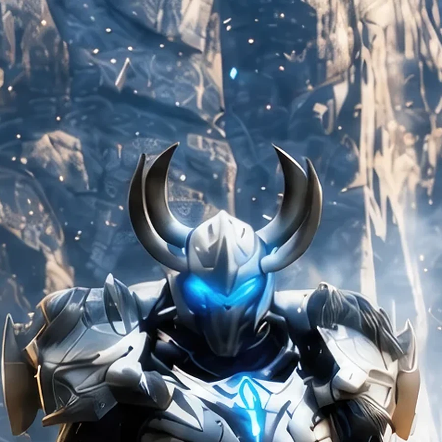
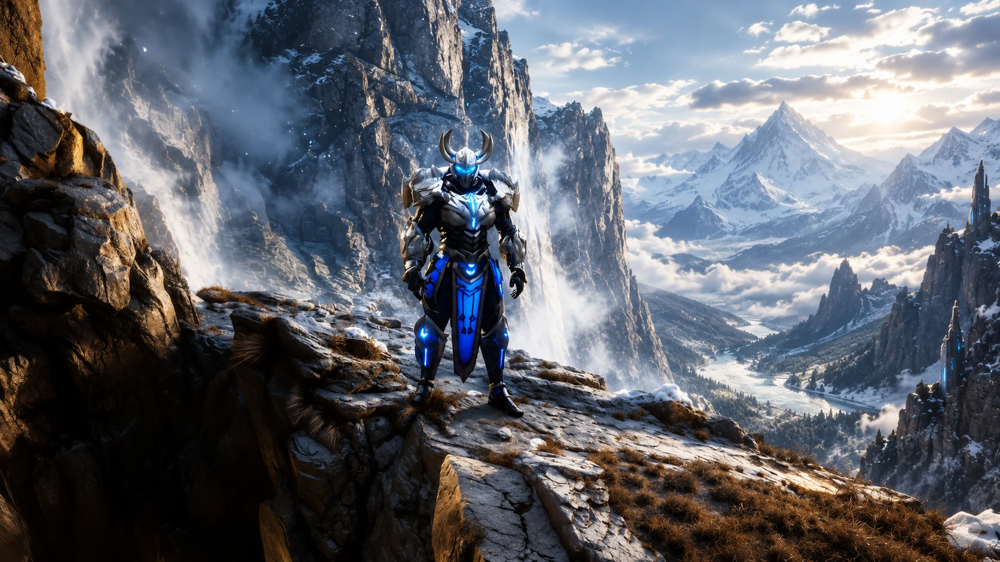
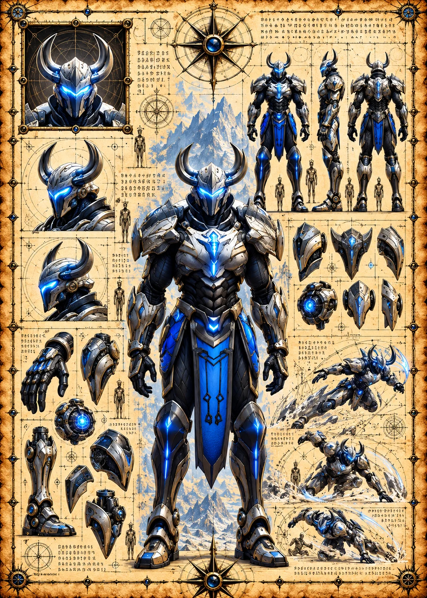

Field Observation
A broad red energy pool spreads across the snow left of Glona.
 ©
©
GENEZYS ARCHIVE · EARTH 1 · Legionnaire
Abyss Breaker
Identity & combat record
Archive node 01 / 05

Archive record
Glona once walked into the abyss to drag a fallen Marauder back out. The Singularity Slam returns an ally to the fight and pierces an enemy in the same blow. In the Longhouse, the comrade Glona saved still pours the first drink every night.
Combat signature
Enlightens eclipsed ether: Revives 1 ally with 200 Vitalis, 150 Cosmara and 1 CD. Deals 110 pierce damage to 1 enemy.
Genezys 09:07 ™&©2026LEGIONS
Recovered visual record
Archive node 02 / 05

Full frame available // rotate device to landscape
Technical archive
Archive node 03 / 05

Classified field intelligence
Archive node 04 / 05
FIELD REPORT // POOL SURVEY
Field Observation
A broad red energy pool spreads across the snow left of Glona.
Environment
Object Analysis
Key Findings
Motion archive
Archive node 05 / 05
Motion record not yet recovered